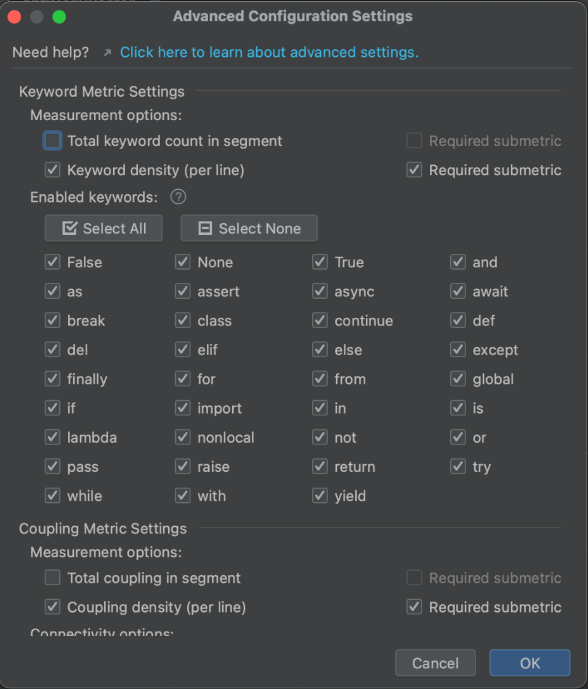

In the advanced settings dialog of the configuration menu of AntiCopyPasterPython, you can customize the makeup of each of the four major metrics by which the plugin evaluates whether to extract a copied segment of code.

Each metric is really composed of a number of submetrics, which are precise quantifications of the code segment.
In this dialog, each submetric can be toggled on or off.
If a submetric is toggled off, then it will not be considered when comparing the greater metric to the determined threshold.
If a submetric is toggled on, it can also be marked as required or not required.
A required submetric must meet its respective threshold for the greater metric to trigger,
while an unrequired submetric can trigger the greater metric but won't prevent it from triggering.
Certain metrics have multiple dimensions.
For example, the Keywords Metric is composed of 62 submetrics.
There are 35 keywords it can count towards the metric, and each keyword can be counted either in total or on a per-line basis.
In the advanced settings dialog, this is extracted into a total / per-line dimension, which has on/off and required/unrequired toggles
for each measurement type, and a specific keyword dimension, which allows each keyword to be counted or disregarded individually.